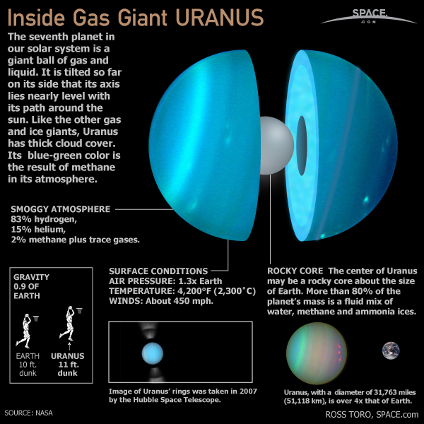

Uranus is the seventh planet from the Sun. It has the third-largest planetary radius and fourth-largest planetary mass in the Solar System. Uranus is similar in composition to Neptune, and both have different bulk chemical composition from that of the larger gas giants Jupiter and Saturn. For this reason, scientists often classify Uranus and Neptune as "ice giants" to distinguish them from the gas giants. Uranus's atmosphere is similar to Jupiter's and Saturn's in its primary composition of hydrogen and helium, but it contains more "ices" such as water, ammonia, and methane, along with traces of other hydrocarbons. It is the coldest planetary atmosphere in the Solar System, with a minimum temperature of 49 K (-224.2 °C), and has a complex, layered cloud structure with water thought to make up the lowest clouds and methane the uppermost layer of clouds. The interior of Uranus is mainly composed of ices and rock.
Internal Structure

Uranus's mass is roughly 14.5 times that of Earth, making it the least massive of the giant planets. Its diameter is slightly larger than Neptune's at roughly four times that of Earth. A resulting density of 1.27 g/cm3 makes Uranus the second least dense planet, after Saturn. This value indicates that it is made primarily of various ices, such as water, ammonia, and methane. The total mass of ice in Uranus's interior is not precisely known, because different figures emerge depending on the model chosen; it must be between 9.3 and 13.5 Earth masses. Hydrogen and helium constitute only a small part of the total, with between 0.5 and 1.5 Earth masses.The remainder of the non-ice mass (0.5 to 3.7 Earth masses) is accounted for by rocky material.

The standard model of Uranus's structure is that it consists of three layers: a rocky (silicate/iron nickel) core in the centre, an icy mantle in the middle and an outer gaseous hydrogen/helium envelope. The core is relatively small, with a mass of only 0.55 Earth masses and a radius less than 20% of Uranus's; the mantle comprises its bulk, with around 13.4 Earth masses, and the upper atmosphere is relatively insubstantial, weighing about 0.5 Earth masses and extending for the last 20% of Uranus's radius. Uranus's core density is around 9 g/cm3, with a pressure in the center of 8 million bars (800 GPa) and a temperature of about 5000 K. The ice mantle is not in fact composed of ice in the conventional sense, but of a hot and dense fluid consisting of water, ammonia and other volatiles. This fluid, which has a high electrical conductivity, is sometimes called a water ammonia ocean.